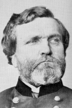

|

|

|
|
|
A Civil War general nicknamed "The Rock of Chickamauga" for
his valiant performance in that battle, George Henry Thomas
was born on July 31, 1816 in Southampton County, Virginia.
After graduating from West Point in 1840, Thomas served in
the Mexican War of 1846 and later was appointed an artillery
and cavalry instructor at his old school. When the war broke
out Thomas was on military duty in Texas. Unlike most other
Virginia-born West Pointers, Thomas remained with the Union.
Throughout the war questions of loyalty would cast a shadow
on his career. Nonetheless, he was promoted to brigadier
general of volunteers in 1861. He saw early action in
Virginia's Shenandoah Valley and in Kentucky, where he was
made the commander of the 1st Division, Army of the Ohio.
Thomas led his division, and then corps, through several
notable battles in the western theater in 1862 and 1863,
including Shiloh, Corinth, Perryville, Stones River,
Tullahoma, Chickamauga and Chattanooga. His leadership in
battle was slow, careful, deliberate, and unusually
effective. Thomas possessed a modest personality that made
him one of the more underrated generals of the war.
Major-General Thomas was offered, but refused, the command
of the Army of the Ohio, believing that his friend Don
Carlos Buell had more experience. After faithfully serving
Buell, Thomas was transferred to the Army of the Cumberland
under William S. Rosecrans. Thomas's outstanding defense in
the battle of Chickamauga, Georgia, literally saved the
Federal Army from certain destruction, and allowed an
orderly retreat back to Tennessee.
After Rosecrans was relieved from command, Thomas was
appointed to head the Army of the Cumberland. He led his
army to victory at Missionary Ridge at the battle of
Chattanooga in November of 1863, and accompanied General
William T. Sherman in the Atlanta Campaign. In May of 1864,
Thomas' army fought at Kennesaw Mountain and Peachtree
Creek. While Sherman marched through Georgia, Thomas was
sent to defend Nashville, Tennessee against the threat of
John Bell Hood's army. In the two battles of Franklin and
Nashville in December of 1864, Thomas smashed the
Confederates, earning the grateful thanks of President
Lincoln and the nation.
Thomas remained with the regular army after the war, and
when he died on in San Francisco on March 28, 1870 he was
the commander of the Military Division of the Pacific.
Source: Joan Waugh, ed., Facts on File Encyclopedia of American
History: Civil War and Reconstruction, 1856 to 1869 (New York: Facts on
File, 2003), 353-354.
|